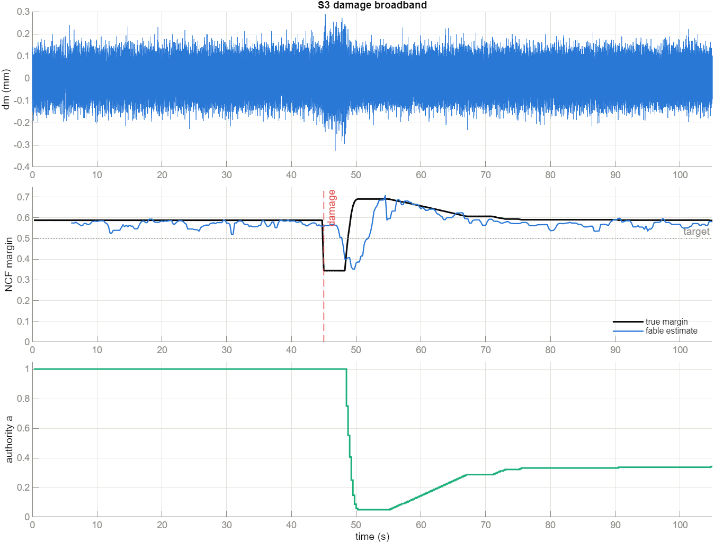
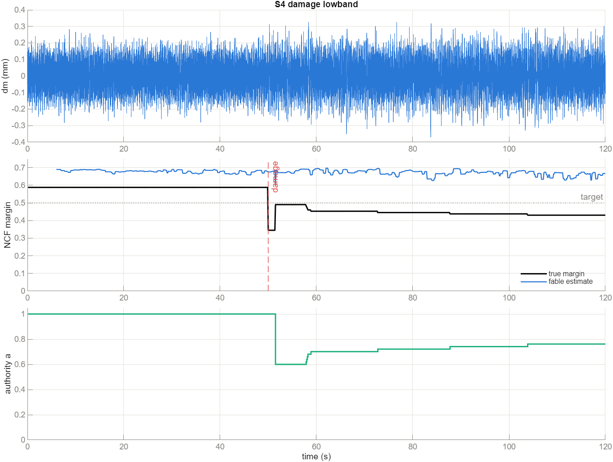
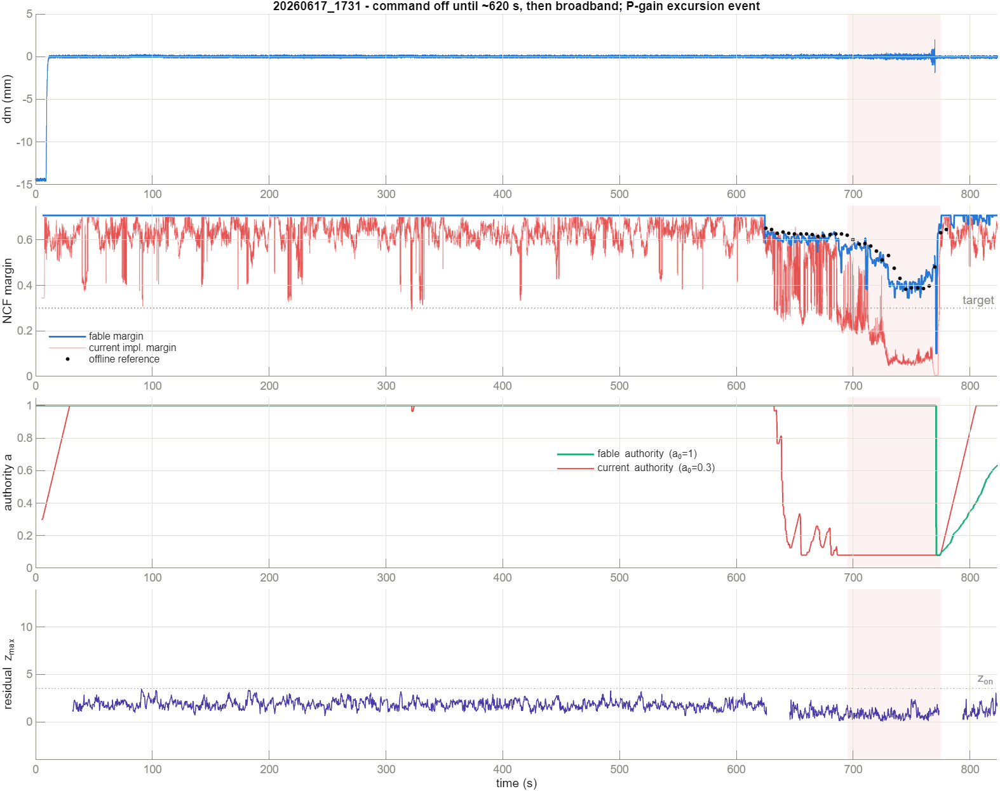
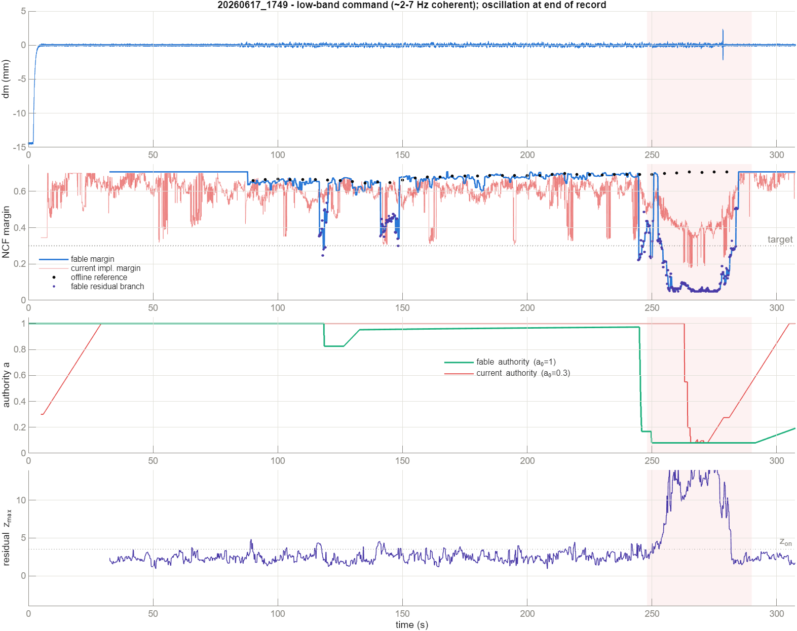
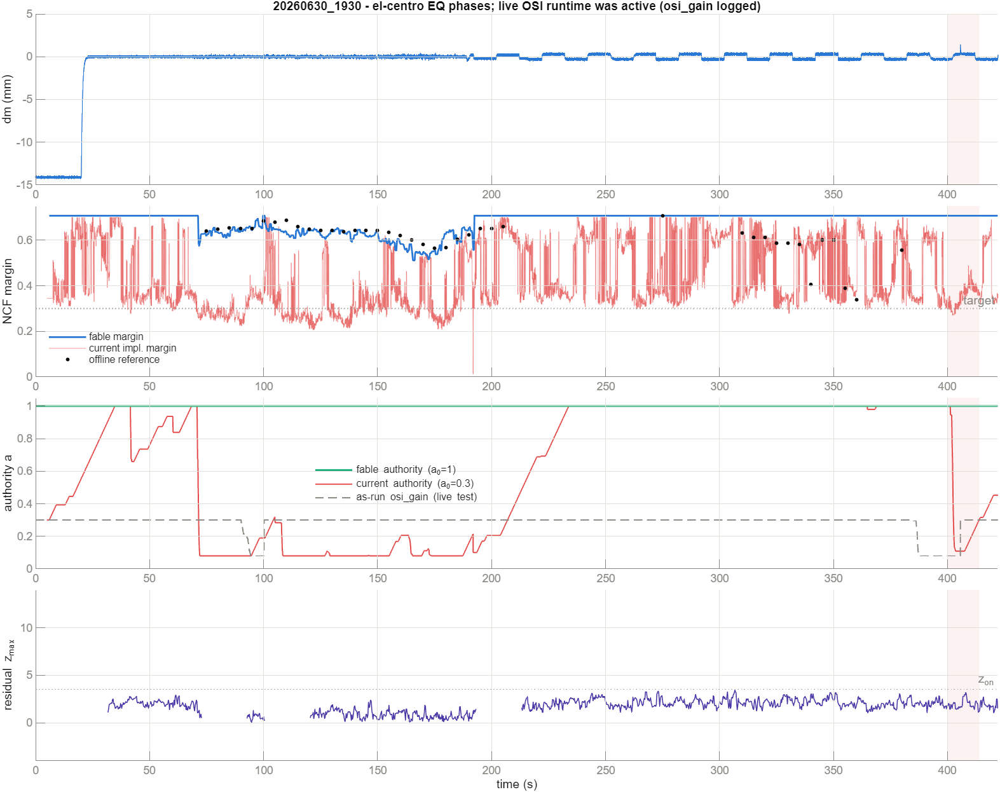

Fable OSI — a redesigned online stability indicator and adaptive PID authority
records: 20260617_1731, 20260617_1749, 20260630_1930
osi_gain at 0.08 for ~300 s of a healthy experiment.
The fable indicator matches an after-the-fact reference margin 6–15× more closely
(median error 0.013–0.023 vs 0.059–0.319), reacts to the one genuine instability (1749, end of record)
at the first update after onset, and sheds hard when the margin truly collapses. Replayed at the
0.50 target used in §6–7, fable's healthy false-low is 0–6% against 44–64% for the
current implementation; a target that close to this rig's healthy scatter does cost fable some healthy
authority on 1749 and 1930 (see §7) — at the earlier 0.30 replay target it held full authority with
zero false trips on all three records. In the closed-loop simulator, where the true margin is computable, the
estimate tracks truth to 0.01–0.05, and the two-scale fast path moves the authority within
0.5 s of plant damage when the command excites the critical band (1.5 s when it does
not — an information-theoretic limit, see §3.6), with the true margin returned to target in every
scenario. Deployment steps for the Simulink/Speedgoat model are in fable_simulink.md.
2026-07-02 update. The authority law is now a target-tracking regulator (§4): it holds full authority whenever the margin is at or above the target OSI (default 0.55) and regulates the margin back onto the target when it drops, with tunable drop speed, recovery speed, smoothness, and anti-flicker gating. The flattened Speedgoat runtime (
fable_osi_runtime.m) now exists and is proven
bitwise-identical to the desktop implementation on all three records (§9); an
extended 10-scenario closed-loop suite — including plant repair and
stability-improvement cases — passes 10/10 (§5.1), and the original 5 checks and 3-record replays
remain green with the new law.
Contents
2. The margin being estimated
3. The fable indicator
4. The target-tracking authority law
5. Ground-truth validation
5.1 The 10-scenario suite
6. The three experimental records
7. Scorecard
8. Limitations & deployment notes
9. Speedgoat runtime & tuning workflow
10. Files & how to run
1. What was wrong with the current OSI / authority update
The current runtime (m91_adaptive_margin + auth_stability_gain, replayed
faithfully by run_current_osi_auth_factor_cases) fails in four structural ways, all visible
in the comparison figures below:
- The residual branch is biased low by construction. Every update it takes the
maximum of ~40 noisy per-bin power ratios and compares it against a percentile-based
calibration constant. The maximum of noisy ratios systematically exceeds the calibration, so the
branch reports a low margin (≈0.3) on perfectly healthy data, forever. Since the reported margin is
min(ST, residual), the bias wins. - The baseline is calibrated during the worst possible seconds. It uses the first 7.5 s of the record — which contain the −14 mm actuator homing ramp — and never revisits the choice, so the "healthy floor" is garbage in every one of these records.
- Blind optimism when unobservable. When there is no coherent input, the ST branch reports the cap (0.70) rather than "don't know", so margin and authority decisions are made on fiction in the long command-off stretches of records 1731 and 1930.
- The authority law can only creep back. Recovery is a fixed
0.0015/update integrator with no model of what authority would actually be safe. Combined with the
biased margin, the deployed test (1930) collapsed 0.3 → 0.08 at
t≈90 s and never recovered. The margin also carries ad-hoc shaping
(
st_powerexponent, percentile games) with no physical meaning.
2. The margin being estimated
Same quantity the project already standardizes on: the chordal (normalized-coprime-factor–style) distance of the loop's Nyquist locus to the critical point, evaluated per frequency and minimized over the band [2, 100] Hz (58–62 Hz line-rejected):
with T estimated from the measured dd → dm map and S = 1 − T.
Since any strictly proper loop has |L| → 0 somewhere in the band, 1/√2 is the mathematical
ceiling; the estimator caps there, and the cap carries the meaning
"no evidence of margin deficit", never "measured 0.707". For this rig the nominal
(healthy plant tf_sp1_7000, PID P0.15/I20/D0.0015) margin is
0.588 @ 35 Hz; the degraded plant (tf_sp1_5000) gives
0.345 @ 38 Hz.
3. The fable indicator (fable_osi.m)
3.1 Two-scale rolling-STFT architecture
The estimator steps every 0.125 s. The SLOW scale (accuracy): 1 s Hann segments hopped every 0.25 s in a 5 s ring of 17 segment spectra — one new 2048-point FFT per hop (the previous runtime recomputed all 39 segment FFTs of its window at every update, then had to time-slice them across target ticks). The FAST scale (latency, §3.6): 0.25 s segments in a ~0.5 s ring — one 512-point FFT per step. Auto- and cross-spectra are aggregated by medians across segments (robust to one-segment transients), and coherence is bias-corrected using the effective number of independent averages keff (computed from the Hann overlap correlations; keff ≈ 9.1 here).
3.2 Branch A — coherent (S,T) margin, debiased
A bin enters the ST branch only if it passes a null-calibrated coherence gate — the threshold where a truly unrelated bin would pass with probability α = 1%:
and an input-power gate (within 35 dB of the in-band peak). The power gate matters: a single false-coherence bin at an undriven frequency reads |T̂| = huge and would nuke the margin to zero — this exact failure appeared in testing and is why coherence alone is not enough. The margin is the minimum of the 3-bin-median-smoothed chordal curve over gated bins (≥5 required), with a 3-sample temporal median. No percentile shaping, no exponent — the estimate is left unbiased so that its level can be compared against the target honestly.
3.3 Branch B — residual growth at undriven frequencies, evidence-based
Instability that the command doesn't excite shows up as growing output power at quiet bins (dm = S·v under noise v). The branch watches only bins the command does not drive, inside the configured hazard band (default 28–100 Hz — where this loop can actually go unstable; low-frequency harmonic distortion of a strong low-band command is deliberately outside it). Per update:
- residual PSD ratio vs a calibrated baseline, self-normalized by the cross-bin quiet median — broadband intensity changes cancel;
- robust z-score of the log ratio against the calibration spread (median/MAD);
- the branch engages only after z > 3.5 persists for 3 hops at the same frequency (±3 Hz). Until then it reports the cap — zero steady-state bias, which is what the old max-of-ratios branch could not do;
- once engaged, the full growth is mapped to margin using the |L| ≈ 1 relation near the critical point (output PSD ∝ |S|², b ∝ 1/|S|):
where b0(ω*) is the prior margin curve at the binding bin. Disengagement is hysteretic (z < 2).
3.4 Calibration that defends itself
- Outlier-rejecting collection: baseline windows must agree with the running reference within 6 dB; if everything gets rejected the reference itself was the outlier (actuator homing) and collection restarts.
- Excitation-regime rebaseline: the set of command-driven bins changing (a test phase starting/stopping) legitimately moves the quiet-bin floor — and it is an exogenous, observable event: instability grows quiet-bin power but cannot change which bins the command drives. On a sustained excited-set change the baseline is recollected; the ST branch keeps running throughout. This is what lets one calibration-free runtime survive record 1731 (command off for 620 s, then broadband) and the phase-switching 1930 test without false alarms.
- Gated slow adaptation: when z is quiet, the baseline tracks drift with a 100 s time constant, hard-capped at ±3 dB from calibration so degradation can never be "absorbed".
3.5 Validity semantics
A strict honesty rule throughout: when nothing is measurable the margin is NaN
(warm-up, no data) — never a fabricated "nominal"; when only the output floor is observable the margin is
the cap with st_valid=false, and the authority law treats those states differently.
3.6 The fast path — damage to authority action in ≤ 0.5 s
The 5 s analysis window cannot flip its median in half a second, so speed comes from a second scale, not from degrading the accurate one. The estimator steps every 0.125 s and keeps a short ring of 0.25 s segments beside the slow ring. Two fast statistics, both CUSUM quickest-change detectors (accumulate max(0, Σ(z−ν)); sustained moderate shifts cross in a few steps, isolated healthy spikes decay):
- Pooled FRF-change: d = median over observed bins of |T̂new−T̂slow|²/|T̂slow|², from the NEWEST segment alone — the bin pooling supplies the averaging that a chordal margin from 0.5 s of data cannot. Log-z-scored against its own calibrated healthy spread. A trip additionally requires a margin-degrading direction (bfast < bslow) and an absolutely-concerning fast margin — so the change back to healthy after an event, or a benign shift at safe margins, never sheds.
- Quiet-band burst: the newest segment's undriven sub-band powers (five fixed sub-bands of the hazard band) against calibrated levels — divergence-like growth compounds the shed every 0.125 s step.
Fast trips can only ever reduce authority (one decisive drop sized by the fast margin for
FRF trips; compounding for burst trips), latch the recovery ceiling, and hand regulation to the slow
path. Four gates keep the trip rate at zero on healthy data — each one was added because a real record or a
closed-loop scenario demanded it: (i) stand down while the excitation regime is changing or nascent
(the input-support mask moving); (ii) stand down when the newest segment's input power leaves
[0.25, 4]× its ~3 s average (a fading or bursting command mimics change evidence);
(iii) a trip immediately followed by a confirmed regime recalibration is retrospectively diagnosed
as the transition itself and undone; (iv) the authority-motion gate
(added 2026-07-02): the FRF-change statistic watches the total loop, which includes the
authority factor itself, so in closed loop the caller writes the currently applied authority into
state.a_cmd and the statistic arms only after the authority has been steady
(<fast_amove_frac relative motion) for one full analysis window — the law can therefore
never trip on its own regulation moves. Real damage arrives while the authority is static, so the gate
costs nothing there; replays where the authority never acted on the plant leave a_cmd
unset and keep the detector always armed. Validated result: zero fast trips across all healthy phases
of all three records and all healthy synthetic scenarios.
Information limit, stated honestly: when the command has no power near the critical frequency, the only damage signature is the noise-floor growth — for this rig's plant pair that is ~1.5–2× per 0.25 s snapshot, i.e. a 2–3σ event per segment. No detector can certify that in 0.5 s at a near-zero false-alarm rate; the CUSUM accumulates it in ~1.5 s (S4). A truly diverging loop produces huge z and still trips in ~0.4 s regardless of excitation.
4. The target-tracking authority law (fable_auth.m, rewritten 2026-07-02)
Scalar-state supervisory law, updated every 0.125 s OSI step. The law regulates the
reported margin onto a target OSI (parameter target, default
0.55): whenever the margin is at or above the target the authority recovers to and
holds amax = 1 — a healthy loop runs at full authority; when the margin drops below
the target the authority sheds multiplicatively, a ← a·(b/target)p, until the
margin climbs back. The closed loop settles where b ≈ target (or at a = 1 when the
loop is healthier than the target even at full authority). Contract, in priority order:
| Situation | Action | Rationale |
|---|---|---|
| Burst trip (reason 1) | immediate ×0.6 drop, compounding every 0.125 s step while evidence persists + latch + cooldown | divergence outruns any window; act now |
| Fast FRF trip (reason 2), authority steady ≥1.5 s | ONE decisive drop a·(bfast/target)1.5 (≤×0.6), edge-triggered, + latch + cooldown | decisive but not slam-to-floor; ignored while the authority itself is moving (self-motion gate, §3.6-iv) |
| Trip followed ≤2.5 s by a confirmed regime recalibration | undo: restore pre-trip authority, release latch | the trip was the excitation transition, not the plant |
| Margin NaN | hold | no evidence ≠ evidence of danger; guards stay armed |
| raw b < 0.6·target (severe) | immediate shed toward the SIZED target, 8/s rate, bypasses confirmation and the commit gate | emergency belt — but still sized from evidence, not compounded blindly |
| b < target−0.01 confirmed (2 steps) | shed toward max(power-law, 0.9·apred,dn), rate 2/s — sized once per 1.25 s settle (down_settle_s), re-sized immediately if b falls another 0.02 (re_shed_delta) | the margin estimate lags the loop by its window flush; re-deriving the shed from the same stale reading every step would compound one dip into a slam to the floor (this exact failure appeared at target 0.55 and forced the design) |
| residual-driven deficit | same sheds + recovery cooldown + latched ceiling (×1.15 of post-shed a, forgets over 200 s) | the hazard band is invisible — don't re-probe known-bad territory |
| b ≥ target+0.02 held 1.5 s | recover at 0.08/s × (1 + 3·surplus/target), capped at the interpolated predicted-safe boundary and the latch | sprint back when comfortably healthy, creep when barely above target; never past the predicted boundary |
| same, but no coherent input | recover at 0.02/s ("probe and verify") | silent records can still recover; residual branch + burst guard stand watch |
| any non-emergency move | committed to the loop only in steps ≥ min_step (0.02) | anti-flicker: the internal value keeps integrating, so the gate quantizes recovery instead of deadlocking it |
Every knob above — and which way to turn it for a smoother, more constant, or more aggressive
authority, and for faster or slower drop/recovery — is documented in the TUNING GUIDE
header of fable_auth.m. The per-branch estimator knobs (each OSI branch smoother ↔ more
aggressive) are documented in the header of fable_osi.m. Tune interactively with
fable_tune_explorer (§9).
4.1 The predicted-safe authority, done correctly
Because authority scales the loop linearly (L(a) = (a/anow)·L̂), the measured loop L̂ = T̂/(1−T̂) at coherent bins yields a predicted margin curve bpred(α) over a 25-point gain grid. One subtlety is essential and easy to get wrong:
The prediction is a bound and an accelerator, never a trust anchor: it floors confirmed sheds
at 90% of the predicted-safe authority (no pointless slam to amin while the 5 s window
flushes) and caps recovery at the safe-interval boundary, linearly interpolated between grid
points — the boundary already stands pred_guard (0.03) of margin short of the
target crossing, and the up_deadband hysteresis supplies the standoff below it. (The first
draft applied an additional ×0.9 haircut on the way up; combined with the coarse gain grid it
permanently stranded the authority at ≈0.9 whenever the target sits close to the healthy margin — with
target 0.55 against a 0.588 healthy margin the loop could never return to full authority. The margin
slack is the principled standoff; the multiplicative haircut double-counted it and is now down-path
only.) The prediction is only consulted when the binding frequency is inside the coherently observed
band (st_binding); a residual-driven deficit is outside the model's sight, so there the
shed proceeds to the power-law floor until the evidence clears.
5. Ground-truth validation (closed loop, computable true margin)
run_fable_synthetic_checks.m builds a sample-accurate closed loop — the project's discrete
PID against the identified plants (tf_sp1_7000 healthy /
tf_sp1_5000 damaged, both strictly proper, dual-state so the swap keeps states
continuous), with the OSI and the authority law running in the loop at their real cadence, output noise, and
the true chordal margin computed analytically at every update from the active plant and current authority.
Target 0.50 (healthy true margin 0.588, damaged 0.345). All five scenarios pass:
| Scenario | What it proves | Key numbers | |
|---|---|---|---|
| S1 healthy broadband | accuracy, no false adaptation | median |b̂−b| = 0.014; false-low 0%; a ≥ 1.00; zero trips | PASS |
| S2 input ×5 mid-run | intensity robustness | margin shift 0.017; no adaptation; zero trips | PASS |
| S3 damage, broadband | detect → shed → defend, fast | authority moved 0.500 s after damage; true margin defended to target−0.02; steady err 0.023 | PASS |
| S4 damage, low-band command | invisible-band damage via the quiet-band paths | authority moved 1.5 s (information limit, §3.6); defended to target−0.08 | PASS |
| S5 silence | no false alarms, no false sheds | a never shed; zero alarms | PASS |


5.1 The extended 10-scenario suite (fable_synthetic_suite.m, target 0.55) — 10/10 PASS
The same sample-accurate closed loop, generalized into a method-pluggable test bench:
scenarios accept any indicator+authority method via a small struct interface
(fable_synthetic_suite('template')), so future methods are validated against the identical
ground truth without touching the harness. Plant changes are a continuous blend
y = (1−λ)·y7000 + λ·y5000 (steps, ramps, and reversals), and the
true margin is computed from the blended loop at the current authority at every update. Run at the
production target 0.55 — which sits only 0.038 under the healthy margin (0.588), so
these scenarios exercise the regulator where it actually has to work. All ten pass:
| Scenario | What it proves | Key numbers | |
|---|---|---|---|
| 1 healthy broadband | gentle regulation at a tight target | median |b̂−b| = 0.014; material false-low 0%; mean a = 0.982, min 0.90; zero trips | PASS |
| 2 input ×5 mid-run | intensity robustness | mean a = 0.997; zero trips | PASS |
| 3 damage step, broadband | detect → shed → defend | authority moved 0.625 s; defended to target−0.03 (0% viol) | PASS |
| 4 damage step, low-band command | invisible-band damage | moved 0.375 s; defended to the quiet-band information limit (≥0.40, 0% viol) | PASS |
| 5 silent | no false adaptation | authority never shed; zero alarms | PASS |
| 6 gradual softening (40 s stiffness fade) | tracking a slow, realistic degradation | margin held ≥ target−0.04 through the ramp; settled error 0.009; a regulating at 0.38 | PASS |
| 7 damage → repair | recovery after a trip is deliberately latched | a = 0.81 at repair+60 s, 0.85 at +105 s (latch decaying, margin healthy throughout) | PASS |
| 8 starts damaged → improves | regulation ONTO the target + fast un-latched recovery | median |btrue−target| = 0.036 while damaged; full authority 9.2 s after the plant heals (no trip fired → nothing latched) | PASS |
| 9 regime change (low-band → broadband), healthy | rebaseline without lasting shed | material false-low 0%; trips confined to the transition; a ≥ 0.89 after the switch | PASS |
| 10 transient output pulse (0.3 s) | bounded reaction, no permanent collapse | margin depressed 0.1 s only; a = 0.74 at +40 s, 0.82 by end | PASS |
Cases 7 and 8 encode the recovery philosophy as a testable contrast: after a
trip (hard evidence of a plant change) recovery is latched and takes minutes by design; after
a deficit that was only ever regulated (no trip), an improving plant gets its authority back in
seconds. Both directions are tunable (latch_decay_tau_s, up_rate,
up_prop).
6. The three experimental records
Replay caveat (applies equally to every offline runner in OSI_tests): the replayed authority did not act on the plant, so the authority traces show what each law would have commanded given the observed margins. Closed-loop behavior is what Section 5 validates. The black dots are an after-the-fact reference: 20 s windows, 2 s Welch segments, coherence > 0.5 — the best margin estimate hindsight can produce from dd→dm, where the input allows one. Both laws are replayed against a 0.50 target margin (figures and scorecard refreshed 2026-07-02; earlier versions of this section used the 0.30 project setting — the margin traces and reference errors are unchanged, the authority and detection behavior are target-dependent).
6.1 20260617_1731 — command off for 620 s, then broadband; P-gain excursion to near-instability

6.2 20260617_1749 — low-band command (2–7 Hz coherent); genuine instability at end of record

Note the harmonic-distortion lesson this record taught: a strong 2–7 Hz command produces narrowband nonlinear products at 10–28 Hz that track excitation level. A residual branch that scans the full band flags them forever (that draft read 0.22 healthy). Confining the watch to the hazard band where this loop can actually go unstable (28–100 Hz; nominal binding 35–38 Hz) removes the false alarm without giving up the protection that caught the real event.
6.3 20260630_1930 — el-centro EQ phases; the live OSI runtime was active

osi_gain (dashed grey)
shows what the current implementation did live: collapsed 0.3→0.08 at t≈90 s of a healthy EQ test and
sat at the floor for ~300 s. The recomputed current margin (red) shows why: biased ≈0.3–0.4 with 64%
false-low against the 0.50 target. Fable tracks the reference through the EQ phases (median error 0.023 vs
0.319) and survives the excitation-phase changes via regime rebaselining, but at the 0.50 target its burst
guard now trips on the harshest phase transitions (~71 s and three trips over ~95–102 s):
authority drops to 0.37 and spends the rest of the healthy window climbing back (mean a = 0.69,
full authority only 5% of the healthy time — at the 0.30 target it held a = 1.0 throughout).
The ~406 s dm blip (shaded) coincides with the live runtime restoring its gain from the floor; it
carries no sustained loop-margin signature (no residual growth, no coherent-margin dip, reference
undefined there). Fable's burst guard trips once more on the transient itself — a defensible ×0.6
precaution with slow latched recovery.7. Scorecard — fable vs current implementation, all three records
Healthy windows: 1731 [625,690] s (command on, pre-event), 1749 [40,210] s, 1930 [80,395] s. Target margin 0.50 (numbers and figures refreshed 2026-07-02; the earlier scorecard used the 0.30 project setting — margin medians, IQRs and reference errors are essentially unchanged, the false-low, authority and detection rows are target-dependent). "Full authority" means a ≥ 95% of the law's own initial value (fable a₀=1.0; current a₀=0.3). Note the 0.50 target sits inside this rig's healthy margin scatter on 1749 and near the EQ-transition dips on 1930, so some authority loss while healthy is the honest price of that target — see the captions.
| Metric | 1731 fable | 1731 cur. | 1749 fable | 1749 cur. | 1930 fable | 1930 cur. |
|---|---|---|---|---|---|---|
| healthy margin, median | 0.607 | 0.522 | 0.675 | 0.611 | 0.707* | 0.372 |
| healthy margin, IQR | 0.021 | 0.244 | 0.057 | 0.060 | 0.068 | 0.266 |
| false-low rate (b<target while healthy) | 0.6% | 44.4% | 6.3% | 7.1% | 0.0% | 64.1% |
| fast-path false trips, healthy | 0 | n/a | 0 | n/a | 3 | n/a |
| time at full authority, healthy | 100% | 30% | 45% | 100% | 5% | 60% |
| median |error| vs offline reference | 0.021 | 0.142 | 0.013 | 0.059 | 0.023 | 0.319 |
| event: margin floor reached | 0.057 | 0.005 | 0.050 | 0.180 | —† | 0.271 |
| event: detection after onset (b<0.50) | 16.0 s (true crossing) | (pre-biased) | 0.0 s | 0.05 s | trip at the blip† | 0.0 s† |
* cap = "no evidence of deficit": during 1930's step-and-hold phases the 5 s window has no coherent bins and no quiet-band growth; the 20 s reference still resolves ≈0.55–0.62 there. † the 1930 "event" is a 1–2 s dm transient coincident with the live runtime restoring its gain from the floor; the offline reference is undefined there and no sustained growth follows. Fable's burst CUSUM trips once on the transient itself (a defensible ×0.6 precaution with slow latched recovery); the current implementation's instant "detection" there is its ordinary bias, not skill.
8. Limitations & deployment notes
- dd/dm only, Speedgoat-shaped. The estimator honors the existing runtime contract
(no
fm/dcrequired). Step mode is fixed-size per call (hop_nsamples, one FFT); state is a fixed-size numeric struct, flattenable exactly likeprepare_osi_gain_runtimeflattens the M9.1 config today. The dd→dm map absorbs the phase lead GT; the margin is therefore the outer (transfer-system) margin — the same quantity the current tests target (target_outer_ncf). - Unobservable-band optimism. Where the command has no power and the output floor shows no growth, the margin reads the cap. That is a statement of evidence, not of the true global margin (1930's step phases read 0.707 while the 20 s reference sees ≈0.6). The authority law compensates: recovery in that state is slow, and the residual latch remembers hazards the band cannot currently see.
- Common-mode blind spot. The residual z-statistic is self-normalized across bins, so a perfectly flat broadband output rise is absorbed by design (that is what makes it immune to intensity changes). Broadband divergence is covered by the calibrated sub-band burst CUSUMs and, when any input is present, by the ST branch; a physically diverging loop also concentrates power at the unstable frequency within a couple of windows, which the z-statistic then sees.
- Quiet-band regulation tolerance. With no command power at the critical frequency, a mild deficit (< ~0.08 below target for this rig) produces a growth signature beneath any detector's noise floor; the law regulates such deficits to a target−0.08 tolerance band rather than to the target itself (S4). Serious deficits and divergence produce strong signatures and are shed hard and fast. This is an information limit, not a tuning choice.
- Fast-path guarantee scope. "Authority moves ≤0.5 s after damage" holds when the command excites the critical band (S3 class, and any test with broadband/EQ excitation through the binding region). Quiet-band-only damage takes ~1.5 s (S4 class); truly diverging loops trip in ~0.4 s regardless.
- Replay ≠ closed loop. On the records, authority did not feed back into the plant. The closed-loop claims rest on Section 5, where the whole chain (estimator → law → loop) runs sample-accurately against a computable truth.
- Knobs that matter:
target(0.55 production default — it must stay below the healthy-loop margin at full authority, 0.588 for this rig, or the law will permanently detune the loop chasing an unreachable margin; 0.30 in the record replays, 0.50/0.55 in the synthetic studies);residual_band_hz(set from where your loop can go unstable);window_s/hop_s(latency vs variance). The full authority tuning surface — smoothness (b_filt_tau_s), drop speed and sizing cadence (down_rate,down_settle_s,re_shed_delta), recovery speed (up_rate,up_prop,up_hold_s,up_rate_blind), anti-flicker (min_step, deadbands, confirm counts), post-event caution (latch constants) — is documented knob-by-knob in thefable_auth.mheader; the per-branch estimator knobs in thefable_osi.mheader. Tune against real records withfable_tune_explorer(§9).
9. Speedgoat runtime, equivalence & the tuning workflow
The step path is deployed as control_and_HS/OSI/fable_osi_runtime.m — a single
%#codegen MATLAB Function body wrapped exactly like the legacy
osi_gain_runtime.m: called once per 2048 Hz base-rate sample with scalar
dd, dm, en; all configuration arrives as fixed-size parameter arrays built at compile time
by prepare_fable_runtime.m (index maps documented there); all estimator state lives in
fixed-size persistents and the authority state in scalar persistents; raw samples go into circular
rings (no per-tick buffer copy). Outputs: auth, b_osi, b_st, b_res, b_fast, trip_reason, valid,
decision, held between internal 0.125 s steps. The enable/pause contract matches the legacy
block (en = 0 shadow, 1 active, +2 pause resets the
rings but keeps calibration and authority state).
test_fable_runtime_equivalence feeds the same dd/dm
stream through the runtime (sample-by-sample) and the desktop fable_osi + fable_auth
loop and compares every trace. Result: max|Δ| = 0 (bitwise) on all three experimental
records and a synthetic path-coverage stream. Getting to zero required replicating MATLAB's exact
even-count median rounding — median() and movmedian() use different
formulas (overflow-safe midpoint vs. midpoint anchored at the smaller-magnitude middle value),
established by fuzzing and preserved in the runtime's hand-coded helpers. Stage A of the
fable_simulink.md verification protocol is therefore complete.If the target overruns (TET too high), the runtime header contains the ordered
playbook: (1) scheduling — move the block to a triggered subsystem or split the hop work across steps
(no algorithm change); (2) fable_pred_enable = 0 (drops the prediction grid; the law falls
back to power-law regulation); (3) step_s = 0.25 (halves the fast path, doubles trip
latency); (4) hop_s = 0.5; (5) narrower band_hz; (6) shorter
window_s; (7) fewer alpha_grid points; (8) fewer burst sub-bands. Do
not shrink segment_s below 1 s or weaken the coherence/input gates — they are
the false-alarm protection, not overhead.
Tuning workflow. fable_tune_explorer replays any record in
saved_results/tests/important (selection dialog, index, or path) through the exact runtime
function and draws linked-zoom subplots — dm, every OSI branch + the selected margin + the target line,
and the authority with trip markers — with your 'osi'/'auth' override structs
stamped on the figure. Because the explorer runs the very code the Speedgoat executes, a tuning settled
there transfers 1:1 to the target. Re-validate any tuning with fable_synthetic_suite
(closed loop) before deploying.
10. Files & how to run
addpath(fullfile(project_root, 'OSI_tests', 'fable'))
test_fable_runtime_equivalence(2); % runtime == desktop, bitwise
checks = run_fable_synthetic_checks; % 5 closed-loop ground-truth scenarios
suite = fable_synthetic_suite; % 10-scenario suite (target 0.55)
results = run_fable_osi_tests; % 3-record replay + current-impl comparison
fable_tune_explorer; % pick a record, tune interactively| File | Role |
|---|---|
fable_osi.m | estimator — config / state / step / run; rolling-STFT ring; ST + residual branches; fast guard (incl. the authority-motion gate); regime rebaseline; prediction curve; per-branch tuning guide in the header |
fable_auth.m | target-tracking authority law — params / state + scalar-state step; sized-and-settled sheds, interpolated predicted-safe recovery cap, commit gate, residual latch, self-motion trip gate; tuning guide in the header |
../../control_and_HS/OSI/fable_osi_runtime.m | the Speedgoat runtime — flattened %#codegen MATLAB Function body, bitwise-equivalent to the two files above; TET playbook in the header |
../../control_and_HS/OSI/prepare_fable_runtime.m | builds/flattens the parameter arrays (fbls, fblw, fblbins, fblfw, fblfbins, fblag, fbla) for the block |
test_fable_runtime_equivalence.m | runtime ↔ desktop bitwise equivalence — run after ANY change to the three files above |
fable_tune_explorer.m | interactive tuning replay of any record through the exact runtime (Section 9) |
fable_synthetic_suite.m | 10-scenario closed-loop ground-truth suite with a pluggable method interface (Section 5.1) |
run_fable_synthetic_checks.m | original 5-scenario ground-truth validation (Section 5); figures + PASS/FAIL + figures/synthetic_checks.mat |
run_fable_osi_tests.m | record replays, current-impl replay, offline reference, metrics, figures; caches in results/replay_*.mat — delete after changing the estimator or the law |
fable_simulink.md | step-by-step Simulink/Speedgoat adoption of the fable runtime + the staged hardware verification protocol |
figures/ | all PNG/FIG outputs referenced by this report |
Fable OSI — OSI_tests/fable — generated 2026-07-01, updated 2026-07-02
(target-tracking authority law, Speedgoat runtime + bitwise equivalence, 10-scenario suite, tune explorer).
All numbers in this report are reproducible from the runner scripts; record replays are cached in results/.